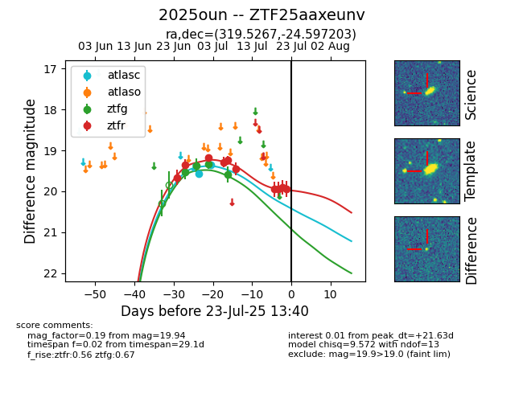

Target ZTF25aaxeunv at 2025-07-23 13:40, see:
FINK: fink-portal.org/ZTF25aaxeunv
Lasair: lasair-ztf.lsst.ac.uk/objects/ZTF25aaxeunv
ALeRCE: alerce.online/object/ZTF25aaxeunv
TNS: wis-tns.org/object/2025oun
YSE: ziggy.ucolick.org/yse/transient_detail/2025oun
alt names
ZTF25aaxeunv (ztf,fink)
2025oun (tns,yse)
coordinates:
equatorial (ra, dec) = (319.5267,-24.59720)
galactic (l, b) = (23.3702,-42.30217)
photometry
last atlasc=19.35, ztfg=19.59, ztfr=19.94
2 atlasc, 4 ztfg, 10 ztfr detections
